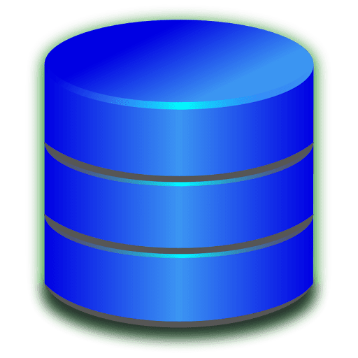
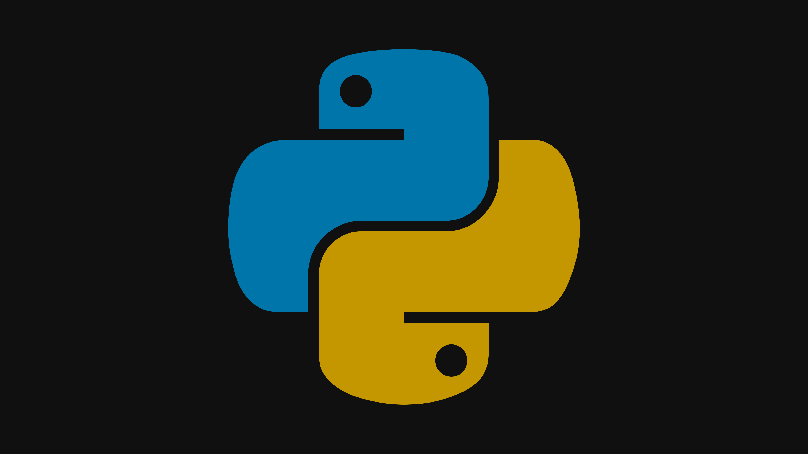
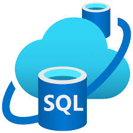
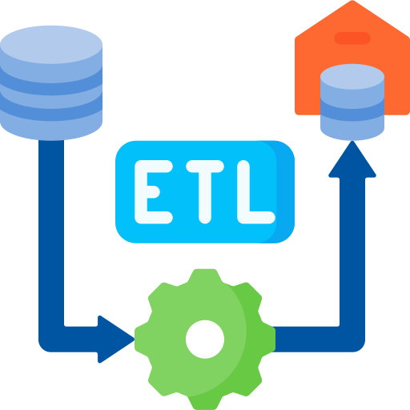
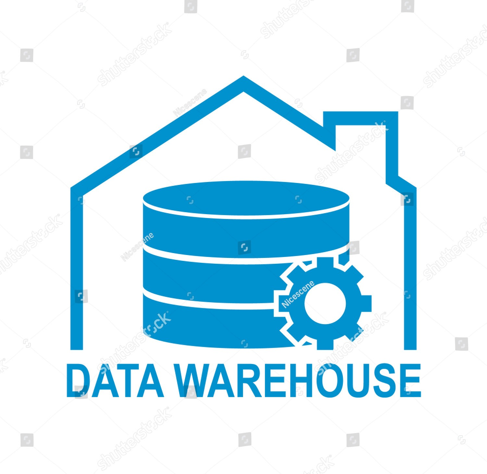
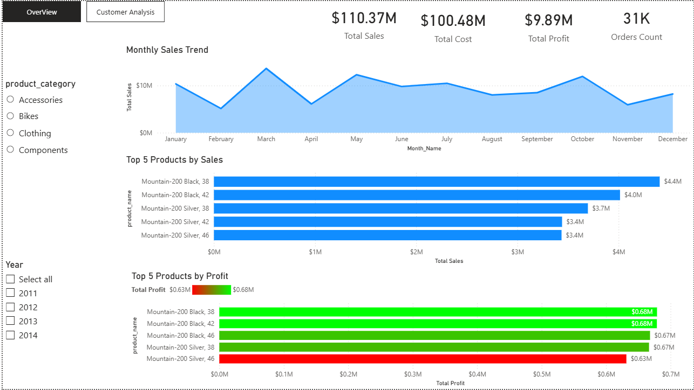
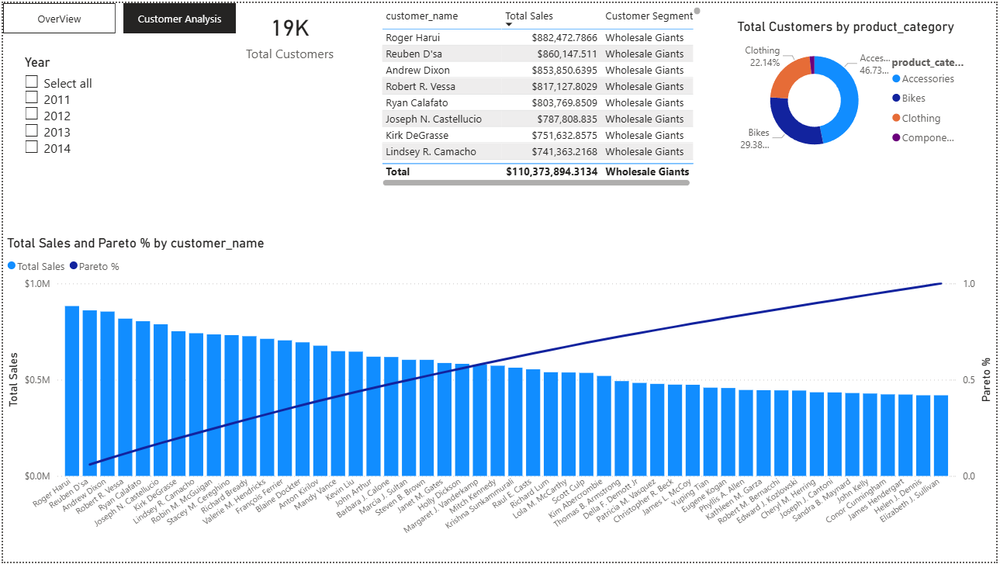

Skills

SQL

Python

Power BI

Building reliable data pipelines and transforming raw data into valuable insights
My name is Abdelrahman Ali. I graduated from the Faculty of Engineering, Alexandria University, with a degree in Electronics and Communication.
I am now a Data Engineer, and most recently, I have developed multiple end-to-end data pipelines that transform raw, unstructured data into clean, reliable datasets.
Throughout my work, I focus on building scalable, maintainable, and efficient data architectures that ensure data integrity and support informed decision-making. I leverage my technical skills in Advanced SQL for complex querying, Python for custom web scraping, data cleaning, and building automated ETL processes, and Power BI for converting raw data into actionable business intelligence.
My experience includes designing and implementing automated ETL workflows, integrating diverse data sources, and delivering dashboards and reports that provide actionable business insights.
Faculty of Engineering – Electronics and Communication




Design and implement efficient ETL processes to move and transform data from multiple sources into reliable datasets.
Clean and prepare raw data for analysis, ensuring accuracy, consistency, and quality of datasets.
Create interactive dashboards that convert raw data into actionable business insights for decision making.
Develop custom Python scripts to extract data from websites and APIs efficiently and reliably.

Building a structured, optimized framework—comprising data sources, staging, storage (Data Marts/Warehouse), and analytics tools—to support business intelligence and decision-making.
Transition from normalized DB to specialized DWH.
Automates hotel search & data extraction from Booking.com.
Complete data pipeline & BI solution with Power BI.
This project demonstrates a complete Data Engineering Pipeline and Business Intelligence solution. It involves extracting raw transactional data (OLTP) from the Microsoft AdventureWorks database, transforming it into a structured Data Warehouse (Star Schema), and visualizing key business insights through a multi-page Power BI dashboard.



I’m always open to new projects or collaborations. Let’s build something amazing together!